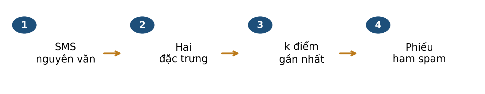
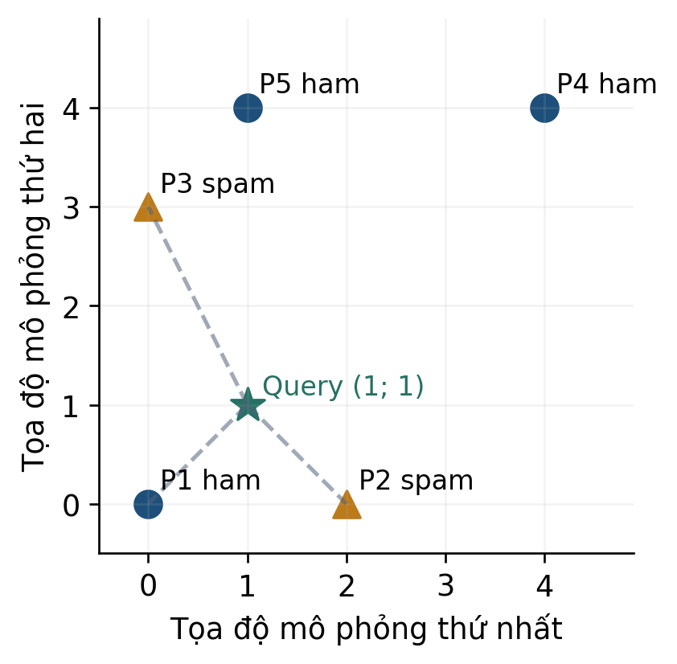
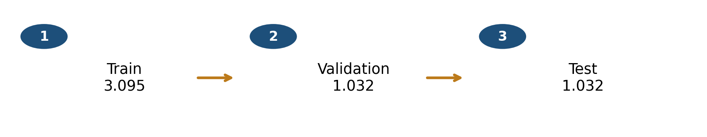
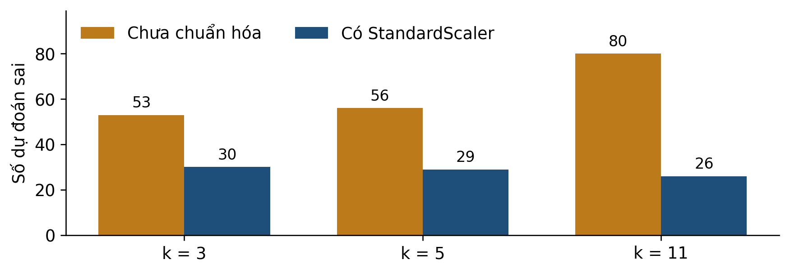

PGS.TS. Nguyễn Văn Hậu
Một bộ lọc nhận SMS mới và cần dự đoán nhãn ham hay spam. Ta bắt đầu từ các SMS đã được gán nhãn trong một corpus công khai. Ý tưởng của kNN là tìm những ví dụ gần tin mới trong không gian đặc trưng rồi dùng nhãn của chúng để bỏ phiếu.

Bài 1 giúp bạn biểu diễn đối tượng bằng vector. Bài này bổ sung nhãn của ví dụ train và quy tắc dự đoán. Ta sẽ hiểu vì sao cùng một SMS có thể nhận dự đoán khác khi thay cách đo khoảng cách.
Tra một SMS thật và giải thích hai tọa độ của nó.
Tính khoảng cách, chọn đúng k điểm và bỏ phiếu theo nhãn.
Áp dụng chuẩn hóa theo cột bằng thống kê của train.
Phân biệt ví dụ tính tay, ví dụ minh họa và kết quả đánh giá.
Cách học: dành khoảng 30–40 phút, chuẩn bị giấy và máy tính căn. Đọc mục 1–8, làm mục 9 rồi xem phụ lục A. Không cần lập trình; phụ lục B dành cho người muốn hiểu sâu hơn.
Bạn cần đọc được vector hai chiều và thực hiện cộng, trừ, bình phương, căn, chia. Tọa độ phải có cùng ý nghĩa ở mọi hàng. Trong bài SMS, ta luôn giữ thứ tự số ký tự, tỷ lệ chữ số.
| Thao tác | Ví dụ | Ý nghĩa |
|---|---|---|
| Chênh lệch | 1 − 3 = −2 | Hướng chênh lệch có thể âm. |
| Bình phương | (−2)² = 4 | Đóng góp vào khoảng cách không âm. |
| Cộng rồi lấy căn | √(1² + 2²) = √5 | Pythagoras trong hai chiều. |
| Tỷ lệ | 12/100 = 0,12 = 12% | Tử đếm một phần, mẫu đếm toàn bộ. |
Lấy chênh lệch ở từng tọa độ, bình phương riêng rồi cộng. Không cộng hai chênh lệch trước khi bình phương.
Khoảng cách bằng 0 nghĩa là hai vector trùng tọa độ. Hai văn bản khác nhau vẫn có thể trùng vector khi ta chỉ giữ hai đặc trưng. Nhãn 0 và 1 là mã lớp, không phải tọa độ thứ ba để đưa vào khoảng cách.
Kiểm nhanh K1: một chuỗi có 50 ký tự, trong đó 5 chữ số. Tỷ lệ chữ số bằng bao nhiêu? K2: khi μ = 100, σ = 20 và x = 80, hãy tính (x − μ)/σ. Đây là số mô phỏng. Đáp án ở phụ lục A.
Dữ liệu SMS Spam Collection do Almeida và Hidalgo công bố, được UCI phân phối [1]. Bản lưu của slide đọc được 5.574 bản ghi. Một bản ghi chứa nhãn và toàn văn SMS, cách nhau bằng tab. Sau bỏ trùng theo quy tắc đã định, còn 5.159 tin: 4.517 ham và 642 spam.
| Mã trong tệp | Nhãn nguồn | Văn bản nguyên gốc |
|---|---|---|
| 2 | ham | Ok lar... Joking wif u oni... |
| 3 | spam | Free entry in 2 a wkly comp to win FA Cup final tkts 21st May 2005. Text FA to 87121 to receive entry question(std txt rate)T&C's apply 08452810075over18's |
Diễn nghĩa để đọc: tin 2 nói người gửi chỉ đang đùa; tin 3 mời tham gia cuộc thi nhận vé và yêu cầu nhắn tin tới một số điện thoại. Bản dịch chỉ giúp hiểu tình huống. Phép đếm dùng tiếng Anh nguyên gốc ở bảng.
| Mã | Số ký tự | Số chữ số | Tỷ lệ chữ số |
|---|---|---|---|
| 2 | 29 | 0 | 0/29 = 0 |
| 3 | 155 | 25 | 25/155 ≈ 0,1613 |
Ở tin 3, các nhóm chữ số là 2, 21, 2005, 87121, 08452810075 và 18. Chúng đóng góp 1 + 2 + 4 + 5 + 11 + 2 = 25 chữ số. Độ dài 155 gồm cả chữ, số, dấu câu và khoảng trắng. Vector cột của tin này là x=(155; 25/155)ᵀ. T là phép chuyển vị khi viết gọn hai thành phần theo hàng; mỗi vector toán học có hai hàng, một cột. Mã thư viện lưu X với mỗi SMS trên một hàng, hai đặc trưng trên hai cột.
Tra lại: mã là thứ tự bản ghi trước bỏ trùng, do chương trình bổ sung. Nó không cho biết người gửi hay thời gian. Hai dấu “...” ở tin 2 là ký tự thật, không phải dấu rút gọn do tài liệu thêm.
Tệp và phép đếm đi kèm được giữ theo slide. Corpus tiếng Anh lịch sử này phục vụ học cơ chế; nhãn spam không phải kết luận đã xác minh về lừa đảo.
Với một query, kNN chọn k vector train gần nhất rồi đọc nhãn của các điểm đã chọn. Mỗi điểm có một phiếu trong cấu hình phiếu đều. Hình dưới là năm điểm mô phỏng để tính tay, không phải tọa độ SMS thật.

| Điểm | P1 | P2 | P3 | P4 | P5 |
|---|---|---|---|---|---|
| d² tới (1; 1) | 2 | 2 | 5 | 18 | 9 |
| Nhãn | ham | spam | spam | ham | ham |
Thứ tự theo d² là nhóm P1 và P2 đồng hạng, rồi P3, P5, P4. Với k = 3, hai phiếu spam thắng một phiếu ham: dự đoán spam. Với k = 5, ba phiếu ham thắng hai phiếu spam: dự đoán ham.
Giới hạn kết luận: query mô phỏng chưa có nhãn thật để chấm. Làm đúng quy tắc bỏ phiếu chưa chứng minh dự đoán đúng. Hai điểm đồng hạng ở đây đều được chọn; không cần tạo thứ tự giả giữa P1 và P2.
Khoảng cách Euclid: x là query, p là một vector train, D là số chiều, j chỉ tọa độ. Các tọa độ phải thống nhất ý nghĩa và cách biến đổi. Xếp tăng d² cho cùng thứ tự như xếp tăng d vì căn tăng trên số không âm.
Tỷ lệ phiếu spam: Nₖ(x) là tập chỉ số k láng giềng, yᵢ = 1 mã hóa spam; ký hiệu 1(điều kiện) bằng 1 khi đúng và 0 khi sai. Với hai lớp, phiếu đều và k lẻ, dự đoán spam nếu s > 1/2. Cần 1 ≤ k ≤ số mẫu train.
Chuẩn hóa theo cột: μⱼ và σⱼ là trung bình và độ lệch chuẩn của đặc trưng j trên train [3]. Trừ để đặt gốc, chia để đo theo đơn vị độ lệch chuẩn. z có thể âm hoặc lớn hơn 1.
| Thao tác | Thống kê dùng | Điều thu được |
|---|---|---|
| Chuẩn hóa L2 bài 1 | Chuẩn của từng vector | Mỗi vector hợp lệ dài 1. |
| StandardScaler bài 2 | μ và σ của từng cột train | Cột train không hằng có trung bình 0, độ lệch chuẩn 1. |
Không đồng nhất: tỷ lệ phiếu là mức đồng thuận của các láng giềng. Nó chưa phải xác suất được hiệu chỉnh hoặc lời bảo đảm về nhãn thật.
Trước khi fit mô hình, nhận diện bản trùng theo văn bản đã gộp khoảng trắng, bỏ khoảng trắng đầu cuối và casefold (chuẩn hóa chữ hoa/thường). Giữ lần xuất hiện đầu. Văn bản gốc của hàng giữ lại vẫn dùng để tính đặc trưng.

| Tập | Vai trò |
|---|---|
| Train | Tính μ, σ; biến đổi train; lưu vector và nhãn vào kNN. |
| Validation | Dùng cùng scaler để thử và chọn cấu hình; có nhãn để chấm. |
| Test | Chấm cấu hình đã khóa; không dùng kết quả để chọn lại k. |
| Đặc trưng | μ | σ |
|---|---|---|
| Số ký tự | 79,31018 | 59,10396 |
| Tỷ lệ chữ số | 0,018052 | 0,047065 |
Ví dụ nhỏ của slide: train 80,80,120,120 có μ=100 và σ=√((400+400+400+400)/4)=20. Vì thế x=110 có z=0,5. Các giá trị hiển thị đã làm tròn; phép tính dùng giá trị đầy đủ trong tệp. StandardScaler ở đây tính phương sai với mẫu số n. Fit là tính thống kê; transform là dùng lại thống kê đó. Cả train, validation, test và query mới đều dùng cùng μ, σ đã fit.
Tự kiểm quy trình: nếu fit scaler riêng trên từng tập, các vector sẽ không còn cùng hệ tọa độ. Nếu fit trên cả test, thông tin của phép chấm cuối đã đi vào bước học. Trong pilot này không refit gộp train và validation.
Xét SMS thật có mã 4500, thuộc validation. Ta giấu nhãn khi dự đoán. Văn bản nguyên gốc:
Latest Nokia Mobile or iPOD MP3 Player +£400 proze GUARANTEED! Reply with: WIN to 83355 now! Norcorp Ltd.£1,50/Mtmsgrcvd18+
Tin mời nhận điện thoại hoặc máy nghe nhạc cùng tiền thưởng. Đếm trên văn bản gốc được 123 ký tự và 14 chữ số; vector x = (123; 14/123). Giữ cả lỗi chính tả “proze” của nguồn.
Biến đổi query và mọi vector train bằng cùng thống kê mục 6. Các giá trị gần đúng ở đây chỉ để theo dõi; không làm tròn trước khi xếp láng giềng.
| Thước đo | Mã train | Ký tự | Tỷ lệ số | d² | Nhãn |
|---|---|---|---|---|---|
| Thô | 2780 | 123 | 23/123 | 0,005354 | spam |
| Thô | 626 | 123 | 0 | 0,012955 | ham |
| Thô | 646 | 123 | 0 | 0,012955 | ham |
| Sau scaler | 4798 | 135 | 15/135 | 0,044538 | spam |
| Sau scaler | 3969 | 134 | 14/134 | 0,074050 | spam |
| Sau scaler | 2353 | 119 | 12/119 | 0,080649 | spam |
Cột ký tự và tỷ lệ số luôn hiển thị giá trị gốc để tra SMS. Ba d² cuối được tính sau transform, không phải từ các số gốc thay thẳng vào Euclid. Ví dụ mã 4798: d² = (12/59,10396)² + ((15/135 − 14/123)/0,047065)² ≈ 0,044538.
Với k = 3, trước chuẩn hóa có hai ham nên dự đoán ham; sau chuẩn hóa cả ba phiếu spam nên dự đoán spam. Mở nhãn nguồn: query là spam. Trường hợp này sau chuẩn hóa đúng nhãn.
Phạm vi: query được chọn có chủ đích để minh họa cơ chế thay đổi. Một tin đúng hơn không chứng minh mọi tin đều đúng hơn.
Để đi xa hơn một query, ta giữ cùng train và so kết quả trên toàn bộ 1.032 tin validation. Hình dưới tính từ thí nghiệm đã lưu trong slide, dùng hai đặc trưng và phiếu đều.

Với k = 3, số lỗi giảm từ 53 xuống 30 khi thêm scaler. Cấu hình chấm cuối là StandardScaler và k = 11, được chọn theo F1 lớp spam trên validation trong các cấu hình đã thử. Để chọn có căn cứ ngay trong Bài 2, ta dùng TP là số spam được phát hiện đúng, FP là ham bị chặn nhầm và FN là spam bị bỏ lọt. Bài 3 phân tích các chỉ số sâu hơn.
| k sau scaler | TP | FP | FN | Tổng lỗi | F1 spam |
|---|---|---|---|---|---|
| 3 | 114 | 15 | 15 | 30 | 0,8837 |
| 5 | 113 | 13 | 16 | 29 | 0,8863 |
| 11 | 112 | 9 | 17 | 26 | 0,8960 |
Ví dụ k3: 2×114/(2×114+15+15)=228/258≈0,8837. k11 đạt F1 cao nhất trong ba k đã thử. FP giảm nhưng FN tăng, nên cần đọc cả hai loại lỗi.
| Dễ hiểu nhầm | Cách đọc đúng |
|---|---|
| k = 3 là k tối ưu | k3 chỉ để minh họa; k11 được chọn trong tập cấu hình thử. |
| Chuẩn hóa luôn cải thiện | Kết quả hỗ trợ lựa chọn trong thí nghiệm này. |
| Hai đặc trưng hiểu toàn bộ SMS | Chúng bỏ qua nghĩa từ và ngữ cảnh. |
| 3/3 phiếu là chắc chắn đúng | Query xa train vẫn có thể nhận đồng thuận cao. |
Tập test đã công bố trong v3 được tái lập bằng cấu hình đã khóa ở v4; đây không phải một đánh giá mù mới. Có 29 lỗi: 12 ham bị dự đoán spam và 17 spam bị dự đoán ham. Không dùng những lỗi này để quay lại chọn k. Bài 3 nhận chính bảng dự đoán này để phân biệt hai loại sai.
Cần thêm bằng chứng khi đổi mục tiêu: kết quả trên corpus tiếng Anh lịch sử chưa cho biết hiệu quả với SMS tiếng Việt hiện tại. Bỏ trùng chính xác cũng chưa loại mọi tin cùng mẫu chiến dịch.
Làm trước khi xem phụ lục A. Chọn một đáp án nếu có lựa chọn; với câu tính, ghi bước trung gian.
Câu 1. Một SMS có 80 ký tự và 8 chữ số. Đặc trưng tỷ lệ chữ số là gì?
A. 8
B. 0,1
C. Xác suất spam 10%
Câu 2. Giữ năm điểm hình 2, đổi query thành (2; 1). Tính d² đến P1–P5 rồi chọn ba láng giềng.
Câu 3. Dùng ba láng giềng vừa chọn ở câu 2. Dự đoán phiếu đều là gì?
A. ham vì train có tổng nhiều ham hơn
B. Không thể bỏ phiếu khi chưa biết nhãn query
C. spam vì có hai phiếu spam trong ba láng giềng
Câu 4. μ và σ để biến đổi query phải lấy từ đâu?
A. Train đã dùng để fit scaler
B. Riêng query mới
C. Fit riêng validation rồi lấy thống kê đó
Câu 5. Được dùng nhãn test để thử k = 3, 5, 11 rồi báo k tốt nhất trên chính test không? Giải thích vai trò nào của test bị thay đổi.
Câu 6. Một query đổi từ sai sang đúng sau scaler chứng minh điều gì?
A. Scaler tốt hơn trên mọi bộ dữ liệu
B. Mọi query sẽ đổi nhãn
C. Cơ chế thay đổi đã được minh họa ở query đó
Mang đến lớp: một bảng d² bạn tự làm và một câu hỏi về dữ liệu hoặc scaler. Nếu chưa chắc mẫu số tỷ lệ chữ số, quay lại mục 3.
kNN dự đoán bằng các ví dụ có nhãn ở gần query trong biểu diễn đã chọn. Chất lượng của phép đo phụ thuộc đặc trưng, đơn vị, cách chuẩn hóa và k; làm đúng số học là một phần của quy trình.
Giữ văn bản gốc để trích đặc trưng; nhãn query chỉ để chấm sau dự đoán.
Fit scaler trên train; transform mọi tập bằng cùng thống kê.
Tính khoảng cách → chọn láng giềng → đọc nhãn → bỏ phiếu.
Chọn cấu hình bằng validation, khóa rồi mới chấm test.
| Thuật ngữ | Nghĩa trong bài |
|---|---|
| Đặc trưng | Số quan sát được từ SMS trước khi biết nhãn. |
| Query | Tin hoặc vector đang cần dự đoán. |
| Láng giềng | Một ví dụ train được chọn theo khoảng cách. |
| k | Số ví dụ tham gia bỏ phiếu. |
| Fit scaler | Tính thống kê trên train. |
| Transform | Áp dụng thống kê đã fit. |
| Phiếu đều | Mỗi láng giềng có cùng trọng số. |
Bám Bài 2 v4: dữ liệu và đặc trưng ở slide 1–14; một lượt kNN ở 15–30; chuẩn hóa ở 32–44; case thật và thực nghiệm ở 45–57; kiểm chứng, vận dụng ở 58–66; bản đồ cuối ở 67. Số liệu và mã bản ghi khớp các CSV kèm tài liệu; bản SMS gốc giữ ở data/. Dữ liệu UCI công bố theo CC BY 4.0; đã ghi tác giả và nguồn.
[1] UCI SMS Spam Collection Almeida và Hidalgo 2011
[2] scikit-learn 1.6 Nearest Neighbors
[3] scikit-learn 1.6 StandardScaler
Nối sang bài 3: “sai 29 tin” còn quá gộp. Ta sẽ đọc riêng chặn nhầm ham, bỏ lọt spam và chọn chỉ số phù hợp với câu hỏi.
K1: 5/50 = 0,1 = 10%. Đây là tỷ lệ ký tự số. K2: (80 − 100)/20 = −1; thấp hơn trung bình một độ lệch chuẩn. Không có độ dài SMS âm.
Đáp án B. 8/80 = 0,1. A mới là số đếm; C biến đặc trưng thành xác suất nhãn mà không có căn cứ. Ôn mẫu số ở mục 3 nếu nhầm.
| Điểm | P1 | P2 | P3 | P4 | P5 |
|---|---|---|---|---|---|
| d² | 5 | 1 | 8 | 13 | 10 |
Ví dụ P3: (2 − 0)² + (1 − 3)² = 4 + 4 = 8. Thứ tự tăng là P2, P1, P3, P5, P4. Chọn P2, P1, P3. Nếu kết quả âm, kiểm bước bình phương; không cần lấy căn để xếp hạng.
Đáp án C. Nhãn theo thứ tự đã chọn là spam, ham, spam. kNN đọc nhãn của ba láng giềng, không bỏ phiếu bằng cả train như A. B nhầm nhãn cần dự đoán với nhãn train đã biết.
Đáp án A. Query và train phải cùng hệ tọa độ đã fit. B không ước lượng biến thiên của train và thường đưa query về 0 ở mỗi cột; C tạo một hệ thống kê khác. Ôn phân biệt fit và transform ở mục 6.
Không dùng chính test như vậy để vừa chọn k vừa báo đánh giá cuối độc lập. Khi thử k theo nhãn test, test đã đóng vai trò validation. Chọn trên validation đã dành riêng, khóa cấu hình rồi đánh giá test; muốn tiếp tục thiết kế sau khi xem test cần một kế hoạch đánh giá mới.
Đáp án C. Query minh họa giúp giải thích thay đổi láng giềng. A suy rộng quá dữ liệu; B sai vì nhiều query có thể giữ nguyên nhãn. Bảng toàn validation cho bằng chứng rộng hơn nhưng vẫn gắn corpus, lần chia và cấu hình.
Tự sửa: lỗi phép tính → mục 2 và 4; lỗi quy trình → mục 6; lỗi kết luận → mục 7 và 8. Ghi rõ bước nào chưa hiểu để hỏi trên lớp.
Phản ví dụ mô phỏng: q = (100; 0,10), A = (101; 0,10), B = (100; 0,20). Khi dùng tỷ lệ, d²(q,A) = 1 còn d²(q,B) = 0,01 nên B gần hơn. Đổi nhất quán trục hai sang phần trăm: q = (100; 10), A = (101; 10), B = (100; 20). Lúc này d²(q,B) = 100 nên A gần hơn. Nội dung không đổi, tỷ trọng của các trục trong Euclid thô đã đổi.
Sau chuẩn hóa dùng chung μ, σ, hai trung bình triệt tiêu khi lấy chênh lệch. Chia σ thay đổi tỷ trọng; chỉ trừ trung bình không đổi khoảng cách đôi một.
Nếu đổi một cột theo cùng hệ số dương c và fit lại scaler trên cùng train, μ và σ cùng nhân c nên z giữ nguyên. Phải đổi cả train và query nhất quán. Cột hằng cần quy ước riêng; StandardScaler dùng scale bằng 1, không chia cho 0 [3].
k lẻ chỉ tránh hòa phiếu khi có hai lớp và phiếu đều. Ba lớp có thể nhận 2–2–1 phiếu dù k = 5. Đồng khoảng cách giữa điểm thứ k và k+1 có nhãn khác nhau còn cần quy tắc chọn rõ; thứ tự train có thể ảnh hưởng cài đặt [2].
Giữ hình 2 và lấy query (12; 12). d² tới năm điểm là 288, 244, 225, 128, 185. Ba láng giềng P4, P5, P3 bỏ hai phiếu ham và một spam. kNN vẫn dự đoán ham dù điểm gần nhất cũng xa √128 ≈ 11,31. Đồng thuận không chứng minh query nằm trong vùng dữ liệu quen thuộc.
Bài mở rộng: tính lại phản ví dụ đơn vị bằng hai cách. Nếu đổi riêng query sang phần trăm còn train giữ tỷ lệ, hãy giải thích vì sao đó là lỗi dữ liệu đầu vào. Không cần học TF-IDF hoặc trọng số khoảng cách để hoàn thành phần chính.